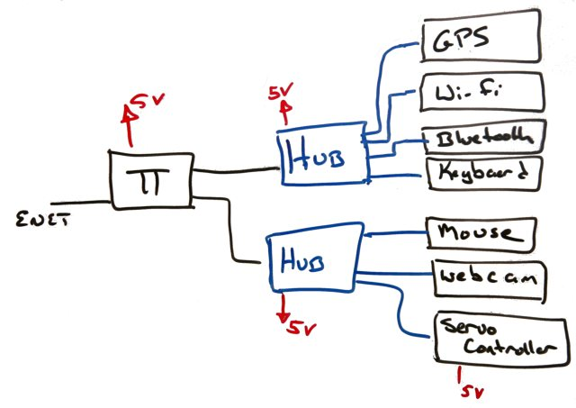

As I may have mentioned, I am using the Raspberry Pi as the robot's primary processor, mainly because it looks' to be a convenient embedded controller. My plan is to selectively leverage the power of the UNIX legacy, while trying to avoid the UNIX curses. To use commonly available USB parts and the boards GPIO port for the small number of special cases.
Everything I have sketched so far sounds rosy' So what is wrong with this design?
The thing most hyped about the Raspberry Pi is its putative price. Discussions over emphasize one model (which you cannot get) of one part of the whole system as the price. Between S&H, taxes, power supplies, SD cards, special USB hubs, etc. the price gets to the more realistic cost $75-$100 quickly.
However, the thing most discussed after getting one is how flaky the Raspberry Pi is. Flaky is normal for embedded ' and another reason to keep developing the code on a different platform.
However, flaky is not a good match for the Pi's target market: newbie's and folks with moderate background using computers.
I have seen all of those; they are the top line items in the Raspberry Pi Troubleshooting FAQ. And throughout forums.
Mostly likely, the software problems ' at least with popular parts of the software ' will get fixed. The hardware ones are probably here to stay.
It could be the power supply. Or the cable. Or heat. Or too many peripherals. Or the wrong one or two peripherals.
The FAQ identifies many of the flaky problems as being power related. Worse, the power troubleshooting is very tricky. And requires tools only an experienced hobbyist would have.
A micro USB port provides the Raspberry Pi's main power. The Pi website emphasizes a few things here. First, most USB chargers are too wimpy. That most micro USB cables are not up to the task: they have enough resistance to lower the voltage.
A resettable fuse called a polyfuse protects the Pi's power input. The basic idea is that they increase in resistance with temperature. Current passing thru the polyfuse creates heat, the more current the more heat. High enough temperature and they effectively are open circuit. The resistance drops as it cools. The Pi makes clear an extra tidbit: the power supplies on the Pi board ' or perhaps the USB peripherals ' are sensitive to the drops in voltage from the slight increases in the polyfuse resistance.
First three lessons:
Given that it is on an outdoor, the electronic boards, including the Raspberry Pi, should be sealed, possibly with some degree of cooling
My target development configuration looks a bit like:

The keyboard/mouse/Ethernet are present to get the system sufficiently configured and debugged to be used headless and wireless.
And, being a UNIX, I need to configure it. Unlike the iPhone, iPod, OS X, and Windows, the Wi-Fi will not configure itself. By which I mean there is some editing of arcane files involved. Again, not something well suited for newbie's.
I am still experimenting, with both the mainline Linux distribution for the more fancy pants GUI, the other for the strictly headless operation.
Fortunately, there are others experimenting with the Pi.
Experience keeps teaching that using an OS like UNIX is usually overkill. Begging for project failure. Even if it has some critical feature, it should be contained. (This does not even get to how slow the Pi is to restart.)
It is still on the table because it looks to be easier to deal with than other kit. However, once it becomes too complex, I am cutting it loose. By too complex, I mean lots work to get anything done and it falls apart easy, with any variation, change, etc.
Atleast I'm not using CORBA. No project should ever suffer that.